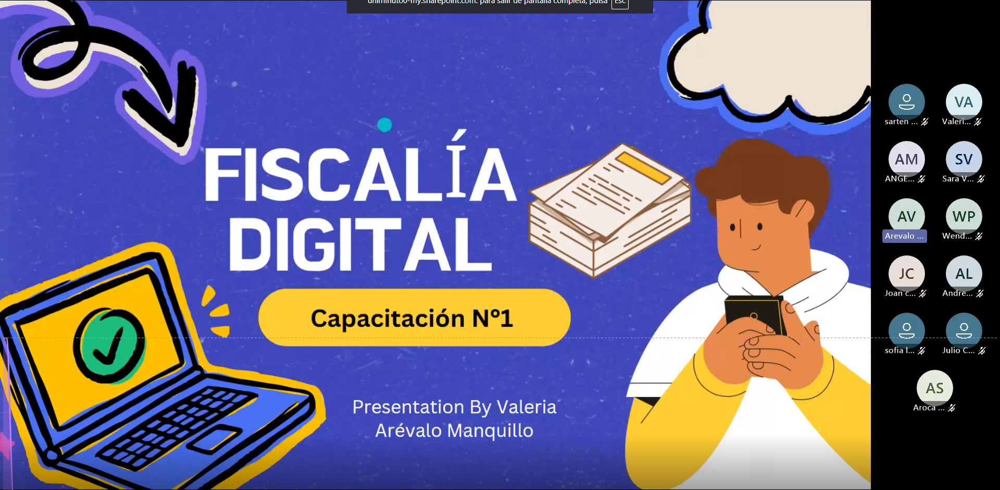
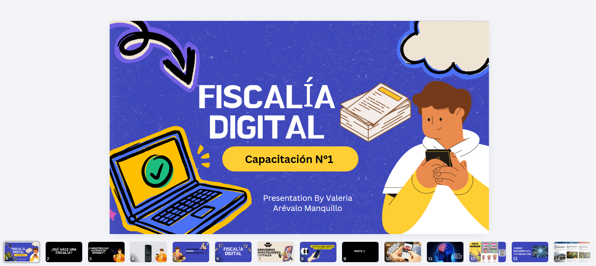
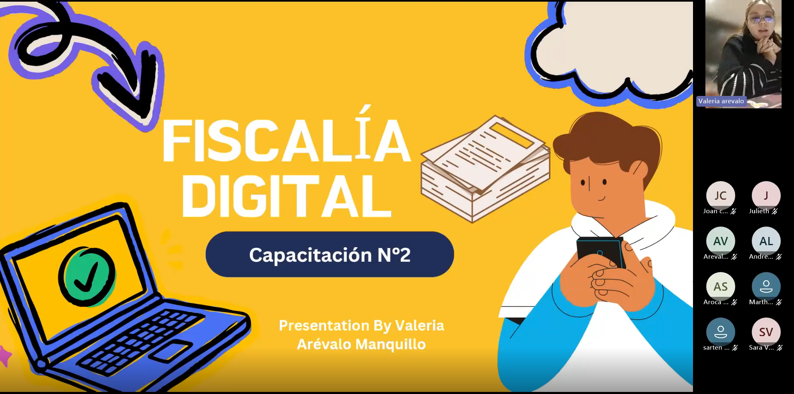
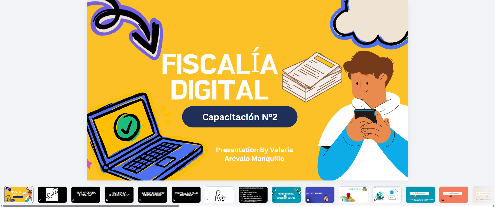
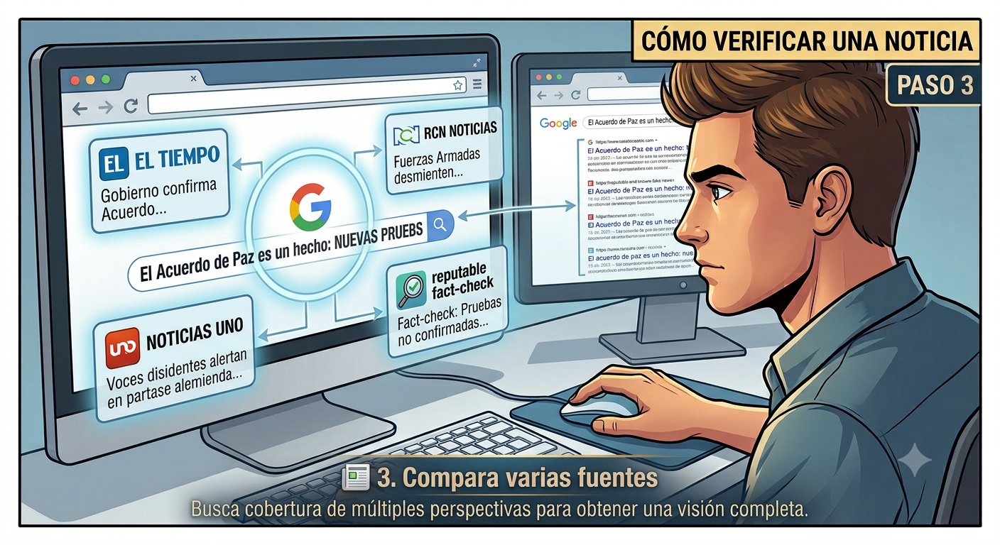

Desarrollo de las sesiones virtuales
Valeria Arévalo Manquillo
Publicado el 30 de julio de 2026 · Bogotá D.C. · Proyecto Social de Formación UNIMINUTOLas dos primeras sesiones del proyecto Fiscalía Digital representaron el inicio del proceso de formación desarrollado con la comunidad mediante encuentros virtuales en Microsoft Teams. Cada sesión fue apoyada por presentaciones elaboradas en Canva, diseñadas específicamente para facilitar la comprensión de conceptos relacionados con ciudadanía digital, desinformación, verificación de información y uso responsable de la tecnología.
El propósito principal de estas jornadas fue generar conciencia sobre la importancia de actuar como ciudadanos digitales responsables, promoviendo el pensamiento crítico frente a la información que circula en Internet y fortaleciendo habilidades para identificar riesgos digitales, noticias falsas y contenidos manipulados mediante herramientas de inteligencia artificial.
Propósito de las sesiones
Más que transmitir conceptos, las capacitaciones buscaron desarrollar criterios para analizar la información antes de compartirla, reconocer riesgos presentes en los entornos digitales y utilizar herramientas tecnológicas de manera ética, segura y responsable.
Línea de tiempo del proceso de capacitación
Sesión 1 · Ciudadanía Digital y Desinformación
Introducción al proyecto Fiscalía Digital, análisis de noticias falsas, ciudadanía digital, riesgos tecnológicos y presentación del método V.E.R.A. para verificar información.
Sesión 2 · Verificación de Información y Páginas Web
Interpretación de direcciones web (URL), dominios, HTTPS, identificación de sitios sospechosos y uso de herramientas como Google Lens, ColombiaCheck, AFP Factual y Google Fact Check Explorer.
Sesión 1 · Ciudadanía Digital y Desinformación
La primera sesión constituyó el punto de partida del proceso de formación del proyecto Fiscalía Digital. El encuentro se desarrolló mediante Microsoft Teams y tuvo como objetivo introducir a los participantes en los conceptos fundamentales de ciudadanía digital, desinformación y uso responsable de Internet.
La actividad fue apoyada por una presentación diseñada en Canva, elaborada específicamente para facilitar la comprensión de los contenidos mediante recursos visuales, ejemplos cotidianos y ejercicios de reflexión. Durante la sesión se promovió la participación activa de los asistentes a través de preguntas, conversaciones guiadas y análisis de situaciones reales relacionadas con la circulación de información en medios digitales.
Temas abordados durante la sesión
- ¿Qué hace una Fiscalía y cuál es su función dentro de la sociedad?
- ¿Qué hacemos nosotros en Internet y cómo dejamos huella digital?
- Noticias falsas y desinformación.
- Cómo procesa nuestro cerebro la información que recibe.
- Ciudadanía digital y comportamiento responsable en línea.
- Riesgos actuales en Internet.
- Deepfakes y contenido generado mediante inteligencia artificial.
- Phishing y fraudes digitales.
- Robo de identidad y protección de datos personales.
- Método V.E.R.A. para verificar información antes de compartirla.
Aprendizajes obtenidos
Al finalizar la sesión, los participantes reconocieron que no toda la información disponible en Internet es confiable y que compartir contenidos sin verificar su origen puede contribuir a la propagación de la desinformación. Asimismo, comprendieron que la ciudadanía digital implica actuar con responsabilidad, proteger la información personal y desarrollar pensamiento crítico frente a los contenidos que circulan en redes sociales y plataformas digitales.
Resultado principal
Los asistentes identificaron herramientas y criterios básicos para verificar información antes de compartirla, fortaleciendo su capacidad para actuar como ciudadanos digitales responsables y conscientes de los riesgos presentes en los entornos virtuales.



Participación activa
Interacción constante mediante preguntas, comentarios y análisis de casos.
Conciencia digital
Mayor comprensión sobre riesgos digitales y protección de datos personales.
Verificación de información
Introducción al método V.E.R.A. como herramienta práctica para evaluar contenidos.
Sesión 2 · Verificación de Información y Páginas Web
La segunda sesión permitió profundizar en los conocimientos adquiridos durante el encuentro anterior y estuvo orientada a fortalecer las habilidades relacionadas con la verificación de información en Internet. La capacitación se desarrolló mediante Microsoft Teams, utilizando una presentación diseñada en Canva que facilitó el aprendizaje mediante ejemplos reales, ejercicios prácticos y demostraciones en línea.
Durante esta jornada, los participantes aprendieron a interpretar correctamente una dirección web (URL), identificar dominios oficiales, reconocer páginas sospechosas y utilizar herramientas digitales especializadas para comprobar noticias, imágenes y contenidos que circulan en redes sociales y aplicaciones de mensajería.
Temas abordados durante la sesión
- Recordatorio de los conceptos trabajados en la Sesión 1.
- ¿Qué es una URL y cómo se interpreta una dirección web?
- Componentes principales de una página web.
- ¿Qué significa HTTPS y por qué es importante?
- Tipos de dominios: .com, .gov, .edu, .org y .co.
- Cómo identificar páginas web sospechosas o fraudulentas.
- Google como herramienta para investigar información.
- Uso de Google Lens para verificar imágenes.
- ColombiaCheck y AFP Factual como plataformas de verificación.
- Google Fact Check Explorer para comprobar afirmaciones y noticias.
Aprendizajes obtenidos
Al finalizar la sesión, los asistentes comprendieron que una dirección web contiene información valiosa sobre el origen y la confiabilidad de un sitio. Además, adquirieron herramientas prácticas para verificar noticias, imágenes y contenidos antes de compartirlos, fortaleciendo su capacidad para tomar decisiones informadas dentro de los entornos digitales.
Resultado principal
Los participantes desarrollaron criterios para identificar sitios web confiables y aprendieron a utilizar herramientas gratuitas de verificación digital, fortaleciendo su capacidad para detectar desinformación y posibles fraudes en Internet.



Interpretación de URLs
Comprensión de la estructura de las direcciones web y de los dominios oficiales.
Herramientas de verificación
Uso de Google Lens, ColombiaCheck, AFP Factual y Fact Check Explorer.
Pensamiento crítico
Mayor capacidad para evaluar la confiabilidad de noticias y páginas web.
Resultados obtenidos
Las dos primeras sesiones permitieron generar un ambiente de participación activa, donde los asistentes compartieron experiencias relacionadas con el uso cotidiano de Internet y reflexionaron sobre la importancia de verificar la información antes de consumirla o difundirla. El desarrollo de actividades prácticas facilitó la apropiación de conceptos fundamentales de ciudadanía digital, verificación de información y ciberseguridad.
Participación activa
Interacción constante mediante preguntas, análisis de casos y ejercicios de reflexión.
Conciencia digital
Mayor comprensión sobre riesgos tecnológicos, protección de datos e identidad digital.
Verificación de información
Uso práctico de herramientas digitales para identificar noticias falsas y sitios confiables.
Comprensión de páginas web
Interpretación de URLs, dominios oficiales y reconocimiento de páginas sospechosas.
Reflexión de la experiencia
El desarrollo de estas sesiones permitió evidenciar que la alfabetización digital continúa siendo una necesidad importante dentro de la comunidad. Muchos participantes manifestaron que, antes de la capacitación, desconocían la existencia de herramientas para verificar noticias, analizar imágenes o identificar sitios web confiables.
La modalidad virtual mediante Microsoft Teams facilitó la interacción con los asistentes y permitió desarrollar una experiencia participativa apoyada por recursos visuales elaborados en Canva. La combinación entre explicaciones, ejemplos reales y ejercicios prácticos favoreció el aprendizaje significativo y el fortalecimiento de competencias digitales aplicables a la vida cotidiana.
Conclusiones
Las dos primeras sesiones del proyecto Fiscalía Digital representaron el punto de partida para fortalecer las competencias digitales de los participantes. A través de una metodología participativa y del uso de recursos audiovisuales, fue posible promover la reflexión sobre el uso responsable de Internet y la importancia de verificar la información antes de compartirla.
Asimismo, las actividades permitieron comprender que la ciudadanía digital implica actuar con responsabilidad, proteger la información personal, identificar riesgos tecnológicos y desarrollar pensamiento crítico frente a los contenidos que circulan en medios digitales.
Aprendizaje más importante
La mejor forma de combatir la desinformación no es compartir más información, sino aprender a verificarla. Cada ciudadano tiene la responsabilidad de analizar las fuentes, comprobar la evidencia y utilizar herramientas digitales que permitan identificar contenidos confiables.
Referencias
- Material de capacitación Fiscalía Digital. Presentación utilizada durante la Sesión 1.
- Material de capacitación Google también es un investigador. Presentación utilizada durante la Sesión 2.
- Proyecto Social de Formación Conectando al Futuro: Inclusión Digital. Corporación Universitaria Minuto de Dios - UNIMINUTO.
- Evidencias audiovisuales de las sesiones virtuales realizadas mediante Microsoft Teams (videos publicados en YouTube como soporte del proceso formativo).